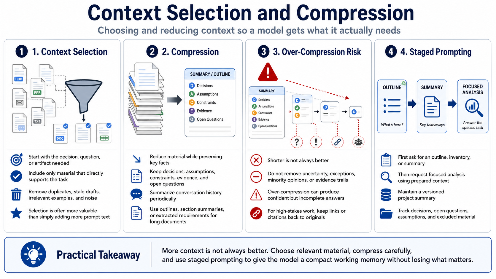

Context Selection and Compression
Connecting to LMS... Progress: in progress

Narration
Context selection is the act of choosing what the model actually needs for the task. More information is not always better. Start by identifying the decision, question, or artifact you want. Then include the source material that directly supports it. Remove duplicates, stale drafts, irrelevant examples, and material that only adds noise. Selection is often more valuable than simply expanding the prompt.
Compression means reducing material while preserving what matters. A useful summary can keep key facts, decisions, assumptions, constraints, evidence, and open questions while leaving out repetition. Conversation history often benefits from periodic summarization. Long documents may benefit from outlines, section summaries, or extracted requirements before the full text is included.
Over-compression is a real risk. If a summary removes uncertainty, exceptions, minority opinions, or evidence trails, the model may produce an answer that sounds confident but misses important nuance. Compression should preserve the information needed for the task, not merely make the text shorter. For high-stakes work, keep links or citations back to the original material so reviewers can verify the summary.
Staged prompting can help. First ask for an outline, inventory, or summary. Then ask for a focused analysis using that prepared context. For complex workflows, maintain a versioned project summary that includes decisions, open questions, current assumptions, and excluded material. This gives the model a compact but useful working memory without forcing every request to include everything.